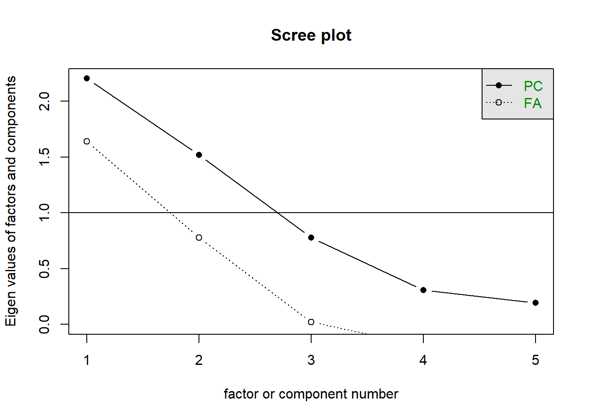
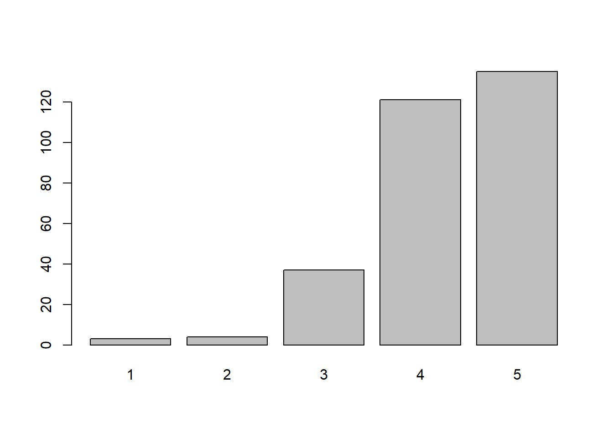
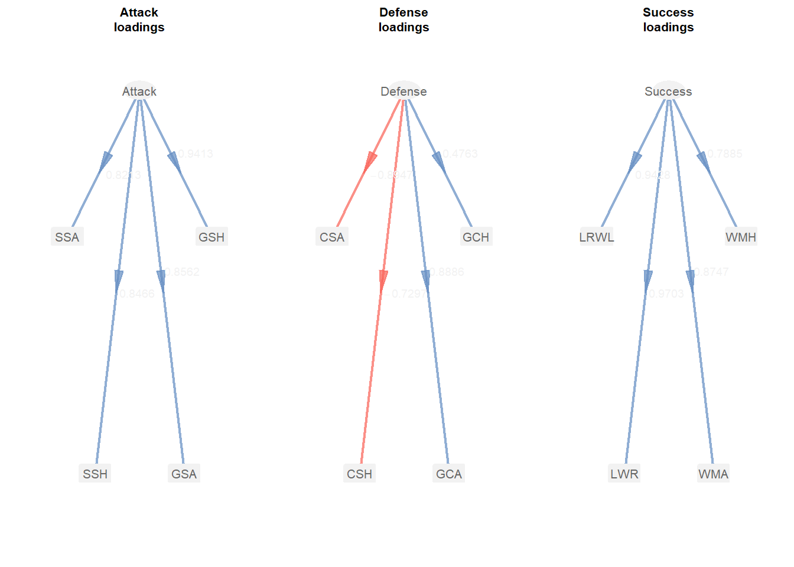

7 Factor Analysis and Structural Equation Modeling (SEM)
7.1 Analisis Faktor
harga <- read.csv("Data/harga.csv")
head(harga)
#> City Bread Burger Milk Oranges Tomatoes
#> 1 Atlanta 24.5 94.5 73.9 80.1 41.6
#> 2 Baltimore 26.5 91.0 67.5 74.6 33.3
#> 3 Boston 29.7 100.8 61.4 104.0 59.6
#> 4 Buffalo 22.8 86.6 65.3 118.4 61.2
#> 5 Chicago 26.7 86.7 62.7 105.9 60.2
#> 6 Cincinnati 25.3 102.5 63.3 99.3 45.6
str(harga)
#> 'data.frame': 23 obs. of 6 variables:
#> $ City : chr "Atlanta " "Baltimore " "Boston " "Buffalo " ...
#> $ Bread : num 24.5 26.5 29.7 22.8 26.7 25.3 22.8 23.3 24.1 29.3 ...
#> $ Burger : num 94.5 91 100.8 86.6 86.7 ...
#> $ Milk : num 73.9 67.5 61.4 65.3 62.7 63.3 52.4 62.5 51.5 80.2 ...
#> $ Oranges : num 80.1 74.6 104 118.4 105.9 ...
#> $ Tomatoes: num 41.6 33.3 59.6 61.2 60.2 45.6 60.1 60.8 60.5 71.7 ...7.1.1 EFA

library(psych)
#> Warning: package 'psych' was built under R version 4.2.3
KMO(harga[,2:6])
#> Kaiser-Meyer-Olkin factor adequacy
#> Call: KMO(r = harga[, 2:6])
#> Overall MSA = 0.52
#> MSA for each item =
#> Bread Burger Milk Oranges Tomatoes
#> 0.52 0.58 0.59 0.49 0.48
# Bartlett's Test of Sphericity
cortest.bartlett(harga[,2:6])
#> R was not square, finding R from data
#> $chisq
#> [1] 36.46285
#>
#> $p.value
#> [1] 7.006877e-05
#>
#> $df
#> [1] 10
# Principal component analysis (PCA)
pca1 = princomp(harga[,2:6], scores=TRUE, cor=TRUE)
summary(pca1)
#> Importance of components:
#> Comp.1 Comp.2 Comp.3
#> Standard deviation 1.4841538 1.2325047 0.8824610
#> Proportion of Variance 0.4405425 0.3038136 0.1557475
#> Cumulative Proportion 0.4405425 0.7443561 0.9001036
#> Comp.4 Comp.5
#> Standard deviation 0.55357732 0.43935672
#> Proportion of Variance 0.06128957 0.03860687
#> Cumulative Proportion 0.96139313 1.00000000
scree(harga[,2:6])
# Menentukan faktor loading Analisis faktor loading
loadings(pca1)
#>
#> Loadings:
#> Comp.1 Comp.2 Comp.3 Comp.4 Comp.5
#> Bread 0.436 0.484 0.354 0.597 0.306
#> Burger 0.542 0.292 0.307 -0.657 -0.309
#> Milk 0.346 0.308 -0.866 -0.163
#> Oranges 0.410 -0.579 0.108 0.399 -0.571
#> Tomatoes 0.478 -0.500 -0.137 -0.211 0.677
#>
#> Comp.1 Comp.2 Comp.3 Comp.4 Comp.5
#> SS loadings 1.0 1.0 1.0 1.0 1.0
#> Proportion Var 0.2 0.2 0.2 0.2 0.2
#> Cumulative Var 0.2 0.4 0.6 0.8 1.0
# Rotasi untuk mengkonfirmasi hasil analisis loading
fa1 = factanal(harga[,2:6], factor=2, rotation="varimax")
fa1
#>
#> Call:
#> factanal(x = harga[, 2:6], factors = 2, rotation = "varimax")
#>
#> Uniquenesses:
#> Bread Burger Milk Oranges Tomatoes
#> 0.239 0.318 0.830 0.420 0.005
#>
#> Loadings:
#> Factor1 Factor2
#> Bread 0.868
#> Burger 0.195 0.803
#> Milk 0.135 0.390
#> Oranges 0.756
#> Tomatoes 0.985 0.157
#>
#> Factor1 Factor2
#> SS loadings 1.605 1.583
#> Proportion Var 0.321 0.317
#> Cumulative Var 0.321 0.638
#>
#> Test of the hypothesis that 2 factors are sufficient.
#> The chi square statistic is 1.16 on 1 degree of freedom.
#> The p-value is 0.282
# Diagram jalur hasil analisis EFA dan menampilkan faktor loading-nya
fa.diagram(fa1$loadings, digits = 3)
7.1.2 CFA
# Spesifikasi model
attach(harga)
model1 <- "
F1 =~ Tomatoes + Oranges
F2 =~ Bread + Burger + Milk
F1 ~~ F2 "
library(lavaan)
#> Warning: package 'lavaan' was built under R version 4.2.3
#> This is lavaan 0.6-17
#> lavaan is FREE software! Please report any bugs.
#>
#> Attaching package: 'lavaan'
#> The following object is masked from 'package:psych':
#>
#> cor2cov
fitmod = cfa(model1, data = harga)
#> Warning in lav_object_post_check(object): lavaan WARNING:
#> some estimated ov variances are negative
summary(fitmod, fit.measures = TRUE, standardized = TRUE)
#> lavaan 0.6.17 ended normally after 85 iterations
#>
#> Estimator ML
#> Optimization method NLMINB
#> Number of model parameters 11
#>
#> Number of observations 23
#>
#> Model Test User Model:
#>
#> Test statistic 3.642
#> Degrees of freedom 4
#> P-value (Chi-square) 0.457
#>
#> Model Test Baseline Model:
#>
#> Test statistic 43.007
#> Degrees of freedom 10
#> P-value 0.000
#>
#> User Model versus Baseline Model:
#>
#> Comparative Fit Index (CFI) 1.000
#> Tucker-Lewis Index (TLI) 1.027
#>
#> Loglikelihood and Information Criteria:
#>
#> Loglikelihood user model (H0) -367.812
#> Loglikelihood unrestricted model (H1) -365.991
#>
#> Akaike (AIC) 757.623
#> Bayesian (BIC) 770.114
#> Sample-size adjusted Bayesian (SABIC) 736.072
#>
#> Root Mean Square Error of Approximation:
#>
#> RMSEA 0.000
#> 90 Percent confidence interval - lower 0.000
#> 90 Percent confidence interval - upper 0.302
#> P-value H_0: RMSEA <= 0.050 0.487
#> P-value H_0: RMSEA >= 0.080 0.469
#>
#> Standardized Root Mean Square Residual:
#>
#> SRMR 0.065
#>
#> Parameter Estimates:
#>
#> Standard errors Standard
#> Information Expected
#> Information saturated (h1) model Structured
#>
#> Latent Variables:
#> Estimate Std.Err z-value P(>|z|)
#> F1 =~
#> Tomatoes 1.000
#> Oranges 0.934 0.580 1.611 0.107
#> F2 =~
#> Bread 1.000
#> Burger 4.700 2.464 1.907 0.056
#> Milk 1.307 0.858 1.523 0.128
#> Std.lv Std.all
#>
#> 10.659 1.062
#> 9.952 0.715
#>
#> 1.622 0.662
#> 7.623 1.032
#> 2.119 0.312
#>
#> Covariances:
#> Estimate Std.Err z-value P(>|z|)
#> F1 ~~
#> F2 5.161 4.482 1.151 0.250
#> Std.lv Std.all
#>
#> 0.299 0.299
#>
#> Variances:
#> Estimate Std.Err z-value P(>|z|)
#> .Tomatoes -12.966 66.742 -0.194 0.846
#> .Oranges 94.906 64.476 1.472 0.141
#> .Bread 3.381 1.581 2.138 0.033
#> .Burger -3.518 27.199 -0.129 0.897
#> .Milk 41.714 12.439 3.354 0.001
#> F1 113.605 72.842 1.560 0.119
#> F2 2.631 1.912 1.376 0.169
#> Std.lv Std.all
#> -12.966 -0.129
#> 94.906 0.489
#> 3.381 0.562
#> -3.518 -0.064
#> 41.714 0.903
#> 1.000 1.000
#> 1.000 1.000
fitmeasures(fitmod)
#> npar fmin
#> 11.000 0.079
#> chisq df
#> 3.642 4.000
#> pvalue baseline.chisq
#> 0.457 43.007
#> baseline.df baseline.pvalue
#> 10.000 0.000
#> cfi tli
#> 1.000 1.027
#> nnfi rfi
#> 1.027 0.788
#> nfi pnfi
#> 0.915 0.366
#> ifi rni
#> 1.009 1.011
#> logl unrestricted.logl
#> -367.812 -365.991
#> aic bic
#> 757.623 770.114
#> ntotal bic2
#> 23.000 736.072
#> rmsea rmsea.ci.lower
#> 0.000 0.000
#> rmsea.ci.upper rmsea.ci.level
#> 0.302 0.900
#> rmsea.pvalue rmsea.close.h0
#> 0.487 0.050
#> rmsea.notclose.pvalue rmsea.notclose.h0
#> 0.469 0.080
#> rmr rmr_nomean
#> 2.823 2.823
#> srmr srmr_bentler
#> 0.065 0.065
#> srmr_bentler_nomean crmr
#> 0.065 0.080
#> crmr_nomean srmr_mplus
#> 0.080 0.065
#> srmr_mplus_nomean cn_05
#> 0.065 60.915
#> cn_01 gfi
#> 84.843 0.947
#> agfi pgfi
#> 0.803 0.253
#> mfi ecvi
#> 1.008 1.115
library(semPlot)
semPaths(fitmod, what='std', layout='tree', title = TRUE,
posCol = 1, nDigits = 3,
edge.label.cex=0.7,
exoVar = FALSE,
sizeMan = 5,
sizeLat = 5)
# Estimasi Reliabilitas alpha cronbach
psych::alpha(harga[,2:6])
#> Number of categories should be increased in order to count frequencies.
#>
#> Reliability analysis
#> Call: psych::alpha(x = harga[, 2:6])
#>
#> raw_alpha std.alpha G6(smc) average_r S/N ase mean sd
#> 0.63 0.67 0.77 0.29 2.1 0.1 67 5.8
#> median_r
#> 0.26
#>
#> 95% confidence boundaries
#> lower alpha upper
#> Feldt 0.32 0.63 0.82
#> Duhachek 0.42 0.63 0.83
#>
#> Reliability if an item is dropped:
#> raw_alpha std.alpha G6(smc) average_r S/N alpha se
#> Bread 0.64 0.63 0.68 0.30 1.7 0.110
#> Burger 0.56 0.54 0.63 0.23 1.2 0.107
#> Milk 0.64 0.68 0.78 0.34 2.1 0.091
#> Oranges 0.55 0.65 0.66 0.32 1.9 0.140
#> Tomatoes 0.37 0.59 0.61 0.26 1.4 0.197
#> var.r med.r
#> Bread 0.065 0.26
#> Burger 0.083 0.13
#> Milk 0.096 0.26
#> Oranges 0.043 0.32
#> Tomatoes 0.062 0.27
#>
#> Item statistics
#> n raw.r std.r r.cor r.drop mean sd
#> Bread 23 0.38 0.64 0.56 0.30 25 2.5
#> Burger 23 0.62 0.77 0.72 0.41 92 7.6
#> Milk 23 0.42 0.56 0.36 0.20 62 7.0
#> Oranges 23 0.82 0.61 0.56 0.49 103 14.2
#> Tomatoes 23 0.86 0.71 0.68 0.71 52 10.37.2 Model Persamaan Struktural (SEM)
library(readxl)
#> Warning: package 'readxl' was built under R version 4.2.3
datasem <- read_excel("Data/Datalikert.xlsx")
head(datasem[,1:5])
#> # A tibble: 6 × 5
#> Perusahaan Provinsi Pulau A1 A2
#> <dbl> <chr> <chr> <dbl> <dbl>
#> 1 1 Jawa Barat Jawa 4 5
#> 2 2 Jawa Timur Jawa 5 5
#> 3 3 Jawa Timur Jawa 4 4
#> 4 4 Jawa Barat Jawa 4 4
#> 5 5 Jawa Timur Jawa 4 4
#> 6 6 Jawa Timur Jawa 4 4
str(datasem)
#> tibble [300 × 45] (S3: tbl_df/tbl/data.frame)
#> $ Perusahaan: num [1:300] 1 2 3 4 5 6 7 8 9 10 ...
#> $ Provinsi : chr [1:300] "Jawa Barat" "Jawa Timur" "Jawa Timur" "Jawa Barat" ...
#> $ Pulau : chr [1:300] "Jawa" "Jawa" "Jawa" "Jawa" ...
#> $ A1 : num [1:300] 4 5 4 4 4 4 4 5 4 5 ...
#> $ A2 : num [1:300] 5 5 4 4 4 4 4 5 4 5 ...
#> $ A3 : num [1:300] 5 5 4 3 4 5 4 5 3 5 ...
#> $ A4 : num [1:300] 4 5 4 4 3 4 4 5 3 5 ...
#> $ A5 : num [1:300] 4 4 4 4 4 4 4 5 3 5 ...
#> $ A6 : num [1:300] 4 5 4 4 4 4 4 5 3 4 ...
#> $ A7 : num [1:300] 5 5 5 4 4 4 4 5 3 5 ...
#> $ A8 : num [1:300] 5 5 5 4 4 4 4 5 3 4 ...
#> $ Atotal : num [1:300] 36 39 34 31 31 33 32 40 26 38 ...
#> $ B1 : num [1:300] 4 4 4 4 3 5 3 3 3 4 ...
#> $ B2 : num [1:300] 4 4 4 3 4 4 3 3 2 4 ...
#> $ Btotal : num [1:300] 8 8 8 7 7 9 6 6 5 8 ...
#> $ C1 : num [1:300] 4 4 4 4 4 4 4 5 3 4 ...
#> $ C2 : num [1:300] 4 4 4 4 4 4 4 4 3 4 ...
#> $ Ctotal : num [1:300] 8 8 8 8 8 8 8 9 6 8 ...
#> $ D1 : num [1:300] 4 5 4 4 4 4 4 4 3 4 ...
#> $ D2 : num [1:300] 4 5 4 3 4 5 4 4 2 4 ...
#> $ D3 : num [1:300] 4 5 4 4 4 4 4 4 3 4 ...
#> $ D4 : num [1:300] 4 5 4 5 4 4 4 4 3 4 ...
#> $ Dtotal : num [1:300] 16 20 16 16 16 17 16 16 11 16 ...
#> $ E1 : num [1:300] 5 5 4 4 4 4 4 4 3 5 ...
#> $ E2 : num [1:300] 5 5 4 4 4 5 4 4 3 5 ...
#> $ E3 : num [1:300] 5 5 4 4 4 5 4 5 4 5 ...
#> $ E4 : num [1:300] 4 5 4 3 4 5 4 4 3 4 ...
#> $ E5 : num [1:300] 4 5 4 4 3 5 4 4 3 4 ...
#> $ E6 : num [1:300] 4 5 4 4 4 4 4 4 3 4 ...
#> $ E7 : num [1:300] 4 5 4 4 4 5 4 4 3 4 ...
#> $ E8 : num [1:300] 4 5 4 4 3 5 4 4 3 4 ...
#> $ E9 : num [1:300] 4 5 4 4 4 4 4 4 3 4 ...
#> $ E10 : num [1:300] 4 5 4 4 4 5 4 5 3 4 ...
#> $ E11 : num [1:300] 4 5 4 3 3 5 4 5 3 4 ...
#> $ E12 : num [1:300] 5 5 4 4 4 5 4 5 3 5 ...
#> $ Etotal : num [1:300] 52 60 48 46 45 57 48 52 37 52 ...
#> $ F1 : num [1:300] 5 5 4 4 4 5 4 4 2 4 ...
#> $ F2 : num [1:300] 4 5 4 4 4 5 4 4 3 3 ...
#> $ F3 : num [1:300] 4 5 4 4 4 4 4 4 2 3 ...
#> $ F4 : num [1:300] 4 5 4 4 4 5 4 5 3 4 ...
#> $ F5 : num [1:300] 4 5 4 4 3 5 4 4 3 3 ...
#> $ F6 : num [1:300] 4 5 4 4 3 4 4 5 3 4 ...
#> $ F7 : num [1:300] 4 5 4 4 3 4 4 4 3 4 ...
#> $ F8 : num [1:300] 4 5 4 4 4 5 4 4 3 4 ...
#> $ Ftotal : num [1:300] 33 40 32 32 29 37 32 34 22 29 ...
# Spesifikasi Model
sem.model = "
faktor =~ A1 + A2 + A3 + A4
permintaan =~ B1 + B2
industri =~ C1 + C2
strategi =~ D1 + D2 + D3 + D4
regulasi =~ E1 + E2 + E3 + E4 + E5 + E6
kesempatan =~ F1 + F2 + F3 + F4
kesempatan ~ faktor + permintaan + industri + strategi + regulasi"
sem.fit = sem(sem.model, data = datasem)
summary(sem.fit, fit.measures=TRUE)
#> lavaan 0.6.17 ended normally after 90 iterations
#>
#> Estimator ML
#> Optimization method NLMINB
#> Number of model parameters 59
#>
#> Number of observations 300
#>
#> Model Test User Model:
#>
#> Test statistic 555.757
#> Degrees of freedom 194
#> P-value (Chi-square) 0.000
#>
#> Model Test Baseline Model:
#>
#> Test statistic 7355.210
#> Degrees of freedom 231
#> P-value 0.000
#>
#> User Model versus Baseline Model:
#>
#> Comparative Fit Index (CFI) 0.949
#> Tucker-Lewis Index (TLI) 0.940
#>
#> Loglikelihood and Information Criteria:
#>
#> Loglikelihood user model (H0) -4608.159
#> Loglikelihood unrestricted model (H1) -4330.280
#>
#> Akaike (AIC) 9334.318
#> Bayesian (BIC) 9552.841
#> Sample-size adjusted Bayesian (SABIC) 9365.728
#>
#> Root Mean Square Error of Approximation:
#>
#> RMSEA 0.079
#> 90 Percent confidence interval - lower 0.071
#> 90 Percent confidence interval - upper 0.087
#> P-value H_0: RMSEA <= 0.050 0.000
#> P-value H_0: RMSEA >= 0.080 0.410
#>
#> Standardized Root Mean Square Residual:
#>
#> SRMR 0.035
#>
#> Parameter Estimates:
#>
#> Standard errors Standard
#> Information Expected
#> Information saturated (h1) model Structured
#>
#> Latent Variables:
#> Estimate Std.Err z-value P(>|z|)
#> faktor =~
#> A1 1.000
#> A2 1.266 0.089 14.271 0.000
#> A3 1.312 0.094 13.991 0.000
#> A4 1.261 0.091 13.913 0.000
#> permintaan =~
#> B1 1.000
#> B2 1.020 0.063 16.072 0.000
#> industri =~
#> C1 1.000
#> C2 1.035 0.044 23.446 0.000
#> strategi =~
#> D1 1.000
#> D2 0.973 0.033 29.472 0.000
#> D3 0.972 0.043 22.590 0.000
#> D4 0.817 0.042 19.325 0.000
#> regulasi =~
#> E1 1.000
#> E2 0.929 0.039 23.666 0.000
#> E3 0.950 0.043 22.088 0.000
#> E4 1.015 0.039 25.697 0.000
#> E5 0.985 0.042 23.464 0.000
#> E6 0.913 0.045 20.186 0.000
#> kesempatan =~
#> F1 1.000
#> F2 1.006 0.038 26.712 0.000
#> F3 1.033 0.042 24.672 0.000
#> F4 0.943 0.046 20.414 0.000
#>
#> Regressions:
#> Estimate Std.Err z-value P(>|z|)
#> kesempatan ~
#> faktor 0.016 0.111 0.146 0.884
#> permintaan 0.042 0.059 0.705 0.481
#> industri 0.129 0.133 0.976 0.329
#> strategi 0.131 0.091 1.449 0.147
#> regulasi 0.685 0.077 8.860 0.000
#>
#> Covariances:
#> Estimate Std.Err z-value P(>|z|)
#> faktor ~~
#> permintaan 0.233 0.034 6.785 0.000
#> industri 0.327 0.037 8.729 0.000
#> strategi 0.292 0.035 8.242 0.000
#> regulasi 0.343 0.039 8.730 0.000
#> permintaan ~~
#> industri 0.366 0.043 8.447 0.000
#> strategi 0.391 0.045 8.713 0.000
#> regulasi 0.332 0.043 7.797 0.000
#> industri ~~
#> strategi 0.437 0.043 10.274 0.000
#> regulasi 0.416 0.043 9.764 0.000
#> strategi ~~
#> regulasi 0.405 0.042 9.580 0.000
#>
#> Variances:
#> Estimate Std.Err z-value P(>|z|)
#> .A1 0.323 0.029 11.229 0.000
#> .A2 0.161 0.018 8.902 0.000
#> .A3 0.205 0.022 9.430 0.000
#> .A4 0.198 0.021 9.552 0.000
#> .B1 0.269 0.032 8.457 0.000
#> .B2 0.078 0.025 3.161 0.002
#> .C1 0.122 0.014 8.515 0.000
#> .C2 0.106 0.014 7.549 0.000
#> .D1 0.093 0.011 8.749 0.000
#> .D2 0.063 0.008 7.476 0.000
#> .D3 0.182 0.017 10.625 0.000
#> .D4 0.200 0.018 11.219 0.000
#> .E1 0.145 0.014 10.563 0.000
#> .E2 0.114 0.011 10.395 0.000
#> .E3 0.156 0.014 10.845 0.000
#> .E4 0.091 0.010 9.488 0.000
#> .E5 0.133 0.013 10.462 0.000
#> .E6 0.198 0.018 11.224 0.000
#> .F1 0.139 0.014 9.697 0.000
#> .F2 0.090 0.011 8.221 0.000
#> .F3 0.140 0.015 9.540 0.000
#> .F4 0.233 0.021 10.912 0.000
#> faktor 0.321 0.047 6.841 0.000
#> permintaan 0.525 0.065 8.048 0.000
#> industri 0.480 0.049 9.751 0.000
#> strategi 0.522 0.050 10.406 0.000
#> regulasi 0.542 0.055 9.811 0.000
#> .kesempatan 0.122 0.015 8.068 0.000
sem.fit = sem(sem.model, data = datasem, std.lv=TRUE)
summary(sem.fit, fit.measures=TRUE, standardized=TRUE)
#> lavaan 0.6.17 ended normally after 90 iterations
#>
#> Estimator ML
#> Optimization method NLMINB
#> Number of model parameters 59
#>
#> Number of observations 300
#>
#> Model Test User Model:
#>
#> Test statistic 555.757
#> Degrees of freedom 194
#> P-value (Chi-square) 0.000
#>
#> Model Test Baseline Model:
#>
#> Test statistic 7355.210
#> Degrees of freedom 231
#> P-value 0.000
#>
#> User Model versus Baseline Model:
#>
#> Comparative Fit Index (CFI) 0.949
#> Tucker-Lewis Index (TLI) 0.940
#>
#> Loglikelihood and Information Criteria:
#>
#> Loglikelihood user model (H0) -4608.159
#> Loglikelihood unrestricted model (H1) -4330.280
#>
#> Akaike (AIC) 9334.318
#> Bayesian (BIC) 9552.841
#> Sample-size adjusted Bayesian (SABIC) 9365.728
#>
#> Root Mean Square Error of Approximation:
#>
#> RMSEA 0.079
#> 90 Percent confidence interval - lower 0.071
#> 90 Percent confidence interval - upper 0.087
#> P-value H_0: RMSEA <= 0.050 0.000
#> P-value H_0: RMSEA >= 0.080 0.410
#>
#> Standardized Root Mean Square Residual:
#>
#> SRMR 0.035
#>
#> Parameter Estimates:
#>
#> Standard errors Standard
#> Information Expected
#> Information saturated (h1) model Structured
#>
#> Latent Variables:
#> Estimate Std.Err z-value P(>|z|)
#> faktor =~
#> A1 0.566 0.041 13.681 0.000
#> A2 0.717 0.038 18.699 0.000
#> A3 0.743 0.041 18.064 0.000
#> A4 0.714 0.040 17.894 0.000
#> permintaan =~
#> B1 0.725 0.045 16.097 0.000
#> B2 0.739 0.038 19.509 0.000
#> industri =~
#> C1 0.692 0.036 19.503 0.000
#> C2 0.717 0.036 20.132 0.000
#> strategi =~
#> D1 0.723 0.035 20.812 0.000
#> D2 0.703 0.033 21.615 0.000
#> D3 0.702 0.038 18.344 0.000
#> D4 0.590 0.036 16.459 0.000
#> regulasi =~
#> E1 0.736 0.038 19.623 0.000
#> E2 0.684 0.034 19.941 0.000
#> E3 0.699 0.037 18.967 0.000
#> E4 0.747 0.035 21.120 0.000
#> E5 0.725 0.037 19.819 0.000
#> E6 0.673 0.038 17.720 0.000
#> kesempatan =~
#> F1 0.350 0.022 16.135 0.000
#> F2 0.352 0.021 16.722 0.000
#> F3 0.361 0.022 16.227 0.000
#> F4 0.330 0.022 14.833 0.000
#> Std.lv Std.all
#>
#> 0.566 0.706
#> 0.717 0.872
#> 0.743 0.854
#> 0.714 0.849
#>
#> 0.725 0.813
#> 0.739 0.935
#>
#> 0.692 0.893
#> 0.717 0.911
#>
#> 0.723 0.922
#> 0.703 0.941
#> 0.702 0.855
#> 0.590 0.797
#>
#> 0.736 0.888
#> 0.684 0.897
#> 0.699 0.870
#> 0.747 0.927
#> 0.725 0.894
#> 0.673 0.834
#>
#> 0.771 0.900
#> 0.776 0.933
#> 0.796 0.905
#> 0.727 0.833
#>
#> Regressions:
#> Estimate Std.Err z-value P(>|z|)
#> kesempatan ~
#> faktor 0.026 0.180 0.146 0.884
#> permintaan 0.086 0.123 0.705 0.481
#> industri 0.256 0.263 0.973 0.331
#> strategi 0.272 0.188 1.447 0.148
#> regulasi 1.443 0.190 7.608 0.000
#> Std.lv Std.all
#>
#> 0.012 0.012
#> 0.039 0.039
#> 0.116 0.116
#> 0.123 0.123
#> 0.654 0.654
#>
#> Covariances:
#> Estimate Std.Err z-value P(>|z|)
#> faktor ~~
#> permintaan 0.568 0.046 12.297 0.000
#> industri 0.833 0.025 33.258 0.000
#> strategi 0.715 0.033 21.548 0.000
#> regulasi 0.822 0.023 35.175 0.000
#> permintaan ~~
#> industri 0.729 0.035 20.610 0.000
#> strategi 0.746 0.032 23.194 0.000
#> regulasi 0.623 0.041 15.291 0.000
#> industri ~~
#> strategi 0.874 0.020 44.744 0.000
#> regulasi 0.816 0.024 33.446 0.000
#> strategi ~~
#> regulasi 0.762 0.027 27.976 0.000
#> Std.lv Std.all
#>
#> 0.568 0.568
#> 0.833 0.833
#> 0.715 0.715
#> 0.822 0.822
#>
#> 0.729 0.729
#> 0.746 0.746
#> 0.623 0.623
#>
#> 0.874 0.874
#> 0.816 0.816
#>
#> 0.762 0.762
#>
#> Variances:
#> Estimate Std.Err z-value P(>|z|)
#> .A1 0.323 0.029 11.229 0.000
#> .A2 0.161 0.018 8.902 0.000
#> .A3 0.205 0.022 9.430 0.000
#> .A4 0.198 0.021 9.552 0.000
#> .B1 0.269 0.032 8.457 0.000
#> .B2 0.078 0.025 3.161 0.002
#> .C1 0.122 0.014 8.515 0.000
#> .C2 0.106 0.014 7.549 0.000
#> .D1 0.093 0.011 8.749 0.000
#> .D2 0.063 0.008 7.476 0.000
#> .D3 0.182 0.017 10.625 0.000
#> .D4 0.200 0.018 11.219 0.000
#> .E1 0.145 0.014 10.563 0.000
#> .E2 0.114 0.011 10.395 0.000
#> .E3 0.156 0.014 10.845 0.000
#> .E4 0.091 0.010 9.488 0.000
#> .E5 0.133 0.013 10.462 0.000
#> .E6 0.198 0.018 11.224 0.000
#> .F1 0.139 0.014 9.697 0.000
#> .F2 0.090 0.011 8.221 0.000
#> .F3 0.140 0.015 9.540 0.000
#> .F4 0.233 0.021 10.912 0.000
#> faktor 1.000
#> permintaan 1.000
#> industri 1.000
#> strategi 1.000
#> regulasi 1.000
#> .kesempatan 1.000
#> Std.lv Std.all
#> 0.323 0.502
#> 0.161 0.239
#> 0.205 0.271
#> 0.198 0.280
#> 0.269 0.339
#> 0.078 0.126
#> 0.122 0.203
#> 0.106 0.171
#> 0.093 0.151
#> 0.063 0.114
#> 0.182 0.270
#> 0.200 0.365
#> 0.145 0.211
#> 0.114 0.195
#> 0.156 0.242
#> 0.091 0.141
#> 0.133 0.201
#> 0.198 0.304
#> 0.139 0.190
#> 0.090 0.130
#> 0.140 0.181
#> 0.233 0.306
#> 1.000 1.000
#> 1.000 1.000
#> 1.000 1.000
#> 1.000 1.000
#> 1.000 1.000
#> 0.206 0.206
#sem.fit = sem(sem.model, data = datasem, std.lv=TRUE, orthogonal=TRUE)
#summary(sem.fit, fit.measures=TRUE, standardized=TRUE)
# Modification Indices
modificationIndices(sem.fit, minimum.value = 10)
#> lhs op rhs mi epc sepc.lv sepc.all
#> 72 faktor =~ D3 10.792 0.143 0.143 0.174
#> 82 faktor =~ F3 14.022 -0.170 -0.170 -0.193
#> 99 permintaan =~ E6 13.919 0.142 0.142 0.176
#> 112 industri =~ D3 19.393 0.315 0.315 0.383
#> 134 strategi =~ E3 11.975 -0.144 -0.144 -0.179
#> 152 regulasi =~ D3 18.808 0.197 0.197 0.240
#> 157 regulasi =~ F4 13.142 0.272 0.272 0.312
#> 168 kesempatan =~ D3 22.896 0.100 0.220 0.268
#> 175 kesempatan =~ E6 25.214 0.153 0.337 0.418
#> 176 A1 ~~ A2 15.863 0.068 0.068 0.298
#> 270 B1 ~~ F4 14.265 0.063 0.063 0.253
#> 317 D1 ~~ D3 10.752 -0.035 -0.035 -0.272
#> 331 D2 ~~ E1 11.098 0.025 0.025 0.257
#> 347 D3 ~~ E6 12.029 0.042 0.042 0.223
#> 351 D3 ~~ F4 10.217 -0.043 -0.043 -0.208
#> 352 D4 ~~ E1 11.953 -0.038 -0.038 -0.223
#> 362 E1 ~~ E2 17.329 0.038 0.038 0.294
#> 363 E1 ~~ E3 10.360 0.033 0.033 0.220
#> 364 E1 ~~ E4 12.186 -0.031 -0.031 -0.266
#> 371 E2 ~~ E3 11.663 0.032 0.032 0.236
#> 373 E2 ~~ E5 10.449 -0.028 -0.028 -0.231
#> 381 E3 ~~ E6 11.439 -0.039 -0.039 -0.221
#> 386 E4 ~~ E5 25.380 0.043 0.043 0.388
#> 398 E6 ~~ F2 14.478 -0.037 -0.037 -0.275
#> 399 E6 ~~ F3 20.998 0.052 0.052 0.310
#> 405 F2 ~~ F4 24.019 -0.058 -0.058 -0.404
#> 406 F3 ~~ F4 14.294 0.050 0.050 0.279
#> sepc.nox
#> 72 0.174
#> 82 -0.193
#> 99 0.176
#> 112 0.383
#> 134 -0.179
#> 152 0.240
#> 157 0.312
#> 168 0.268
#> 175 0.418
#> 176 0.298
#> 270 0.253
#> 317 -0.272
#> 331 0.257
#> 347 0.223
#> 351 -0.208
#> 352 -0.223
#> 362 0.294
#> 363 0.220
#> 364 -0.266
#> 371 0.236
#> 373 -0.231
#> 381 -0.221
#> 386 0.388
#> 398 -0.275
#> 399 0.310
#> 405 -0.404
#> 406 0.279
sem.model2 = "
faktor =~ A1 + A2 + A3 + A4
permintaan =~ B1 + B2
industri =~ C1 + C2
strategi =~ D1 + D2 + D3 + D4
regulasi =~ E1 + E2 + E3 + E4 + E5 + E6
kesempatan =~ F1 + F2 + F3 + F4
kesempatan ~ faktor + permintaan + industri + strategi + regulasi
A1 ~~ A2
"
sem.fit = sem(sem.model2, data = datasem, std.lv=TRUE)
summary(sem.fit, fit.measures=TRUE, standardized=TRUE)
#> lavaan 0.6.17 ended normally after 94 iterations
#>
#> Estimator ML
#> Optimization method NLMINB
#> Number of model parameters 60
#>
#> Number of observations 300
#>
#> Model Test User Model:
#>
#> Test statistic 540.535
#> Degrees of freedom 193
#> P-value (Chi-square) 0.000
#>
#> Model Test Baseline Model:
#>
#> Test statistic 7355.210
#> Degrees of freedom 231
#> P-value 0.000
#>
#> User Model versus Baseline Model:
#>
#> Comparative Fit Index (CFI) 0.951
#> Tucker-Lewis Index (TLI) 0.942
#>
#> Loglikelihood and Information Criteria:
#>
#> Loglikelihood user model (H0) -4600.548
#> Loglikelihood unrestricted model (H1) -4330.280
#>
#> Akaike (AIC) 9321.095
#> Bayesian (BIC) 9543.322
#> Sample-size adjusted Bayesian (SABIC) 9353.038
#>
#> Root Mean Square Error of Approximation:
#>
#> RMSEA 0.077
#> 90 Percent confidence interval - lower 0.070
#> 90 Percent confidence interval - upper 0.085
#> P-value H_0: RMSEA <= 0.050 0.000
#> P-value H_0: RMSEA >= 0.080 0.303
#>
#> Standardized Root Mean Square Residual:
#>
#> SRMR 0.035
#>
#> Parameter Estimates:
#>
#> Standard errors Standard
#> Information Expected
#> Information saturated (h1) model Structured
#>
#> Latent Variables:
#> Estimate Std.Err z-value P(>|z|)
#> faktor =~
#> A1 0.539 0.043 12.660 0.000
#> A2 0.702 0.039 18.009 0.000
#> A3 0.752 0.041 18.363 0.000
#> A4 0.720 0.040 18.060 0.000
#> permintaan =~
#> B1 0.724 0.045 16.093 0.000
#> B2 0.739 0.038 19.507 0.000
#> industri =~
#> C1 0.692 0.036 19.469 0.000
#> C2 0.717 0.036 20.171 0.000
#> strategi =~
#> D1 0.723 0.035 20.813 0.000
#> D2 0.703 0.033 21.613 0.000
#> D3 0.702 0.038 18.345 0.000
#> D4 0.590 0.036 16.460 0.000
#> regulasi =~
#> E1 0.736 0.038 19.615 0.000
#> E2 0.684 0.034 19.943 0.000
#> E3 0.699 0.037 18.964 0.000
#> E4 0.747 0.035 21.115 0.000
#> E5 0.726 0.037 19.826 0.000
#> E6 0.673 0.038 17.728 0.000
#> kesempatan =~
#> F1 0.350 0.022 16.137 0.000
#> F2 0.352 0.021 16.726 0.000
#> F3 0.361 0.022 16.232 0.000
#> F4 0.330 0.022 14.836 0.000
#> Std.lv Std.all
#>
#> 0.539 0.672
#> 0.702 0.854
#> 0.752 0.864
#> 0.720 0.855
#>
#> 0.724 0.813
#> 0.739 0.935
#>
#> 0.692 0.892
#> 0.717 0.912
#>
#> 0.723 0.922
#> 0.703 0.941
#> 0.702 0.855
#> 0.590 0.797
#>
#> 0.736 0.888
#> 0.684 0.897
#> 0.699 0.870
#> 0.747 0.927
#> 0.726 0.894
#> 0.673 0.834
#>
#> 0.771 0.900
#> 0.776 0.933
#> 0.796 0.905
#> 0.727 0.833
#>
#> Regressions:
#> Estimate Std.Err z-value P(>|z|)
#> kesempatan ~
#> faktor 0.031 0.186 0.167 0.867
#> permintaan 0.087 0.122 0.709 0.478
#> industri 0.253 0.267 0.947 0.344
#> strategi 0.272 0.189 1.442 0.149
#> regulasi 1.441 0.190 7.578 0.000
#> Std.lv Std.all
#>
#> 0.014 0.014
#> 0.039 0.039
#> 0.115 0.115
#> 0.123 0.123
#> 0.654 0.654
#>
#> Covariances:
#> Estimate Std.Err z-value P(>|z|)
#> .A1 ~~
#> .A2 0.068 0.019 3.588 0.000
#> faktor ~~
#> permintaan 0.573 0.046 12.417 0.000
#> industri 0.837 0.025 33.458 0.000
#> strategi 0.716 0.033 21.421 0.000
#> regulasi 0.824 0.024 34.919 0.000
#> permintaan ~~
#> industri 0.729 0.035 20.581 0.000
#> strategi 0.746 0.032 23.189 0.000
#> regulasi 0.623 0.041 15.292 0.000
#> industri ~~
#> strategi 0.874 0.020 44.757 0.000
#> regulasi 0.816 0.024 33.429 0.000
#> strategi ~~
#> regulasi 0.762 0.027 27.982 0.000
#> Std.lv Std.all
#>
#> 0.068 0.269
#>
#> 0.573 0.573
#> 0.837 0.837
#> 0.716 0.716
#> 0.824 0.824
#>
#> 0.729 0.729
#> 0.746 0.746
#> 0.623 0.623
#>
#> 0.874 0.874
#> 0.816 0.816
#>
#> 0.762 0.762
#>
#> Variances:
#> Estimate Std.Err z-value P(>|z|)
#> .A1 0.353 0.032 11.133 0.000
#> .A2 0.182 0.020 9.132 0.000
#> .A3 0.192 0.022 8.905 0.000
#> .A4 0.190 0.021 9.171 0.000
#> .B1 0.270 0.032 8.454 0.000
#> .B2 0.078 0.025 3.155 0.002
#> .C1 0.123 0.014 8.573 0.000
#> .C2 0.104 0.014 7.494 0.000
#> .D1 0.093 0.011 8.748 0.000
#> .D2 0.063 0.008 7.481 0.000
#> .D3 0.182 0.017 10.624 0.000
#> .D4 0.200 0.018 11.218 0.000
#> .E1 0.145 0.014 10.565 0.000
#> .E2 0.114 0.011 10.392 0.000
#> .E3 0.157 0.014 10.844 0.000
#> .E4 0.092 0.010 9.490 0.000
#> .E5 0.132 0.013 10.456 0.000
#> .E6 0.197 0.018 11.222 0.000
#> .F1 0.140 0.014 9.700 0.000
#> .F2 0.090 0.011 8.219 0.000
#> .F3 0.140 0.015 9.538 0.000
#> .F4 0.233 0.021 10.912 0.000
#> faktor 1.000
#> permintaan 1.000
#> industri 1.000
#> strategi 1.000
#> regulasi 1.000
#> .kesempatan 1.000
#> Std.lv Std.all
#> 0.353 0.549
#> 0.182 0.270
#> 0.192 0.253
#> 0.190 0.268
#> 0.270 0.339
#> 0.078 0.125
#> 0.123 0.205
#> 0.104 0.169
#> 0.093 0.151
#> 0.063 0.114
#> 0.182 0.270
#> 0.200 0.365
#> 0.145 0.211
#> 0.114 0.195
#> 0.157 0.242
#> 0.092 0.141
#> 0.132 0.201
#> 0.197 0.304
#> 0.140 0.190
#> 0.090 0.130
#> 0.140 0.181
#> 0.233 0.306
#> 1.000 1.000
#> 1.000 1.000
#> 1.000 1.000
#> 1.000 1.000
#> 1.000 1.000
#> 0.206 0.206


7.3 PLS SEM
# source:https://rpubs.com/ifn1411/PLS
# install plspm
#install.packages("plspm")
# load plspm
library(plspm)
#> Warning: package 'plspm' was built under R version 4.2.3
#>
#> Attaching package: 'plspm'
#> The following objects are masked from 'package:psych':
#>
#> alpha, rescale, unidim
# load data spainmodel
data(spainfoot)
# first 5 row of spainmodel data
head(spainfoot)
#> GSH GSA SSH SSA GCH GCA CSH CSA WMH WMA LWR
#> Barcelona 61 44 0.95 0.95 14 21 0.47 0.32 14 13 10
#> RealMadrid 49 34 1.00 0.84 29 23 0.37 0.37 14 11 10
#> Sevilla 28 26 0.74 0.74 20 19 0.42 0.53 11 10 4
#> AtleMadrid 47 33 0.95 0.84 23 34 0.37 0.16 13 7 6
#> Villarreal 33 28 0.84 0.68 25 29 0.26 0.16 12 6 5
#> Valencia 47 21 1.00 0.68 26 28 0.26 0.26 12 6 5
#> LRWL YC RC
#> Barcelona 22 76 6
#> RealMadrid 18 115 9
#> Sevilla 7 100 8
#> AtleMadrid 9 116 5
#> Villarreal 11 102 5
#> Valencia 8 120 6
Attack <- c(0, 0, 0)
Defense <- c(1, 0, 0)
Success <- c(1, 0, 0)
model_path <- rbind(Attack, Defense, Success)
colnames(model_path) <- rownames(model_path)
model_path
#> Attack Defense Success
#> Attack 0 0 0
#> Defense 1 0 0
#> Success 1 0 0
# graph structural model
innerplot(model_path)
Attack <- c(0, 1, 0)
Defense <- c(0, 0, 0)
Success <- c(1, 1, 0)
model_path2 <- rbind(Attack, Defense, Success)
colnames(model_path2) <- rownames(model_path2)
model_path2
#> Attack Defense Success
#> Attack 0 1 0
#> Defense 0 0 0
#> Success 1 1 0
# graph structural model
innerplot(model_path2, txt.col = "black")
# define latent variable associated with
model_blocks <- list(1:4, 5:8, 9:12)
# vector of modes (reflective)
model_modes <- c("A", "A", "A")
# run plspm analysis
model_pls <- plspm(Data = spainfoot, path_matrix = model_path, blocks = model_blocks, modes = model_modes)
model_pls
#> Partial Least Squares Path Modeling (PLS-PM)
#> ---------------------------------------------
#> NAME DESCRIPTION
#> 1 $outer_model outer model
#> 2 $inner_model inner model
#> 3 $path_coefs path coefficients matrix
#> 4 $scores latent variable scores
#> 5 $crossloadings cross-loadings
#> 6 $inner_summary summary inner model
#> 7 $effects total effects
#> 8 $unidim unidimensionality
#> 9 $gof goodness-of-fit
#> 10 $boot bootstrap results
#> 11 $data data matrix
#> ---------------------------------------------
#> You can also use the function 'summary'
# Unidimensionality
model_pls$unidim
#> Mode MVs C.alpha DG.rho eig.1st eig.2nd
#> Attack A 4 0.8905919 0.92456079 3.017160 0.7923055
#> Defense A 4 0.0000000 0.02601677 2.393442 1.1752781
#> Success A 4 0.9165491 0.94232868 3.217294 0.5370492
plot(model_pls, what = "loadings")
# Loadings and Communilaties
model_pls$outer_model
#> name block weight loading communality
#> 1 GSH Attack 0.3474771 0.9412506 0.8859527
#> 2 GSA Attack 0.2671782 0.8562398 0.7331465
#> 3 SSH Attack 0.2922077 0.8466039 0.7167381
#> 4 SSA Attack 0.2396012 0.8212987 0.6745316
#> 5 GCH Defense -0.1198790 0.4762965 0.2268583
#> 6 GCA Defense -0.4264164 0.8885714 0.7895590
#> 7 CSH Defense 0.2949470 -0.7297095 0.5324759
#> 8 CSA Defense 0.3898039 -0.8947452 0.8005689
#> 9 WMH Success 0.2484276 0.7884562 0.6216632
#> 10 WMA Success 0.2691511 0.8747163 0.7651285
#> 11 LWR Success 0.2947322 0.9703409 0.9415614
#> 12 LRWL Success 0.2998524 0.9428112 0.8888929
#> redundancy
#> 1 0.00000000
#> 2 0.00000000
#> 3 0.00000000
#> 4 0.00000000
#> 5 0.05071506
#> 6 0.17650898
#> 7 0.11903706
#> 8 0.17897028
#> 9 0.49452090
#> 10 0.60864477
#> 11 0.74899365
#> 12 0.70709694
# Crossloadings
model_pls$crossloadings
#> name block Attack Defense Success
#> 1 GSH Attack 0.9412506 -0.5139001 0.9019257
#> 2 GSA Attack 0.8562398 -0.3403294 0.7483558
#> 3 SSH Attack 0.8466039 -0.4124617 0.7781795
#> 4 SSA Attack 0.8212987 -0.3455460 0.6308989
#> 5 GCH Defense -0.1302683 0.4762965 -0.1620567
#> 6 GCA Defense -0.4633220 0.8885714 -0.5640722
#> 7 CSH Defense 0.3204993 -0.7297095 0.4850456
#> 8 CSA Defense 0.4235465 -0.8947452 0.5811253
#> 9 WMH Success 0.7126127 -0.4120502 0.7884562
#> 10 WMA Success 0.7720228 -0.7147787 0.8747163
#> 11 LWR Success 0.8454164 -0.5345709 0.9703409
#> 12 LRWL Success 0.8600973 -0.5910943 0.9428112
# Coefficient of Determination
model_pls$inner_model
#> $Defense
#> Estimate Std. Error t value Pr(>|t|)
#> Intercept 5.504973e-17 0.2076918 2.650549e-16 1.00000000
#> Attack -4.728148e-01 0.2076918 -2.276521e+00 0.03526176
#>
#> $Success
#> Estimate Std. Error t value Pr(>|t|)
#> Intercept 7.783183e-17 0.1065936 7.301735e-16 1.000000e+00
#> Attack 8.918971e-01 0.1065936 8.367266e+00 1.285711e-07
# Redundancy
model_pls$inner_summary
#> Type R2 Block_Communality
#> Attack Exogenous 0.0000000 0.7525922
#> Defense Endogenous 0.2235539 0.5873656
#> Success Endogenous 0.7954804 0.8043115
#> Mean_Redundancy AVE
#> Attack 0.0000000 0.7525922
#> Defense 0.1313078 0.5873656
#> Success 0.6398141 0.8043115
# Goodness-of-fit
model_pls$gof
#> [1] 0.6034738
plot(model_pls, what = "inner", colpos = "#6890c4BB", colneg = "#f9675dBB", txt.col = "black", arr.tcol="black")